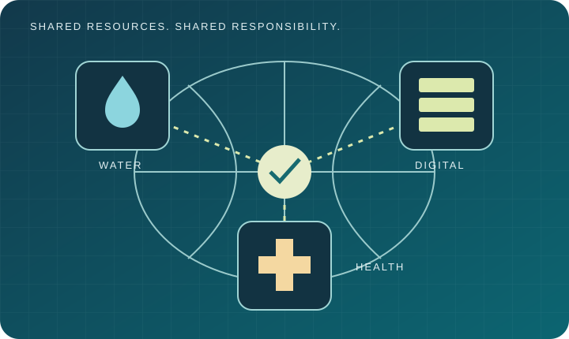

Solo practice
Enter the assembly, explore an issue and rehearse your negotiating position.
GLOBAL HEALTH DIPLOMACY FOR UNIVERSITY STUDENTS
A university simulation for negotiating policy together.
Solo practice Live classroom practice
Checking your session...
You can still follow the captions, play the audio, and complete the negotiation with the controls.
The same negotiation and final PDF report remain available below.
Learn • Negotiate • Implement
Explore the evidence. Represent a delegation. Turn competing priorities into shared policy.

Enter the assembly, explore an issue and rehearse your negotiating position.
Join your assigned room for discussion, live video and a shared policy report.
A narrated animation follows a fictional proposal from opening positions through amendments, compromise and adoption.
How should countries protect water, reliable electricity and health services while expanding digital capacity?
The data-centre exercise is an original teaching scenario. It is not an announced Global Model WHO agenda item.
The INB was established in 2021 to negotiate a pandemic instrument. Its work concluded with the Pandemic Agreement adopted in May 2025. This historical process informs our exercises in iterative drafting and compromise.
Global Model WHO 2026 is scheduled for 10–13 November at WHO Headquarters in Geneva. Its published university topics include AI, health information and trust; health-personnel recruitment; plastics and health; and commercial determinants of health. Our walkthrough draws on the published 2025 simulation handbook; it does not claim to reproduce unpublished 2026 procedures or actual proceedings.
Step inside a negotiation where every word—and every compromise—matters.